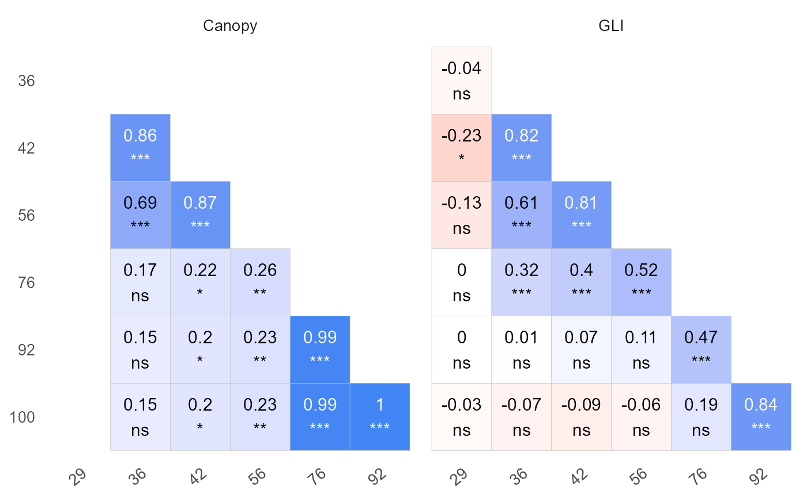
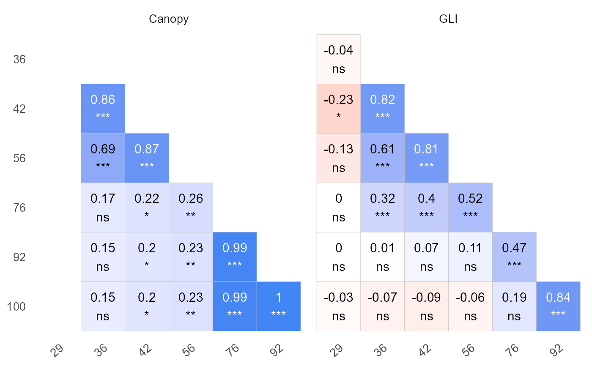

Creates various plots for an object of class explorer.
Depending on the specified type, the function can generate plots that show correlations between variables over x, correlations between x values for each variable, or the evolution of variables over x.
Usage
# S3 method for class 'explorer'
plot(
x,
type = "var_by_x",
label_size = 4,
signif = FALSE,
method = "pearson",
filter_var = NULL,
id = NULL,
n_row = NULL,
n_col = NULL,
base_size = 13,
return_gg = FALSE,
add_avg = FALSE,
...
)Arguments
- x
An object inheriting from class
explorer, resulting from executing the functionexplorer().- type
Character string or number specifying the type of plot to generate. Available options are:
"var_by_x" or 1Plots correlations between variables over x (default).
"x_by_var" or 2Plots correlations between x points for each variable (y).
"evolution" or 3Plot the evolution of the variables (y) over x.
"xy" or 4Scatterplot (x, y)
- label_size
Numeric. Size of the labels in the plot. Default is 4. Only works with type 1 and 2.
- signif
Logical. If
TRUE, adds p-values to the correlation plot labels. Default isFALSE. Only works with type 1 and 2.- method
Character string specifying the method for correlation calculation. Available options are
"pearson"(default),"spearman", and"kendall". Only works with type 1 and 2.- filter_var
Character vector specifying the variables to exclude from the plot.
- id
Optional unique identifier to filter the evolution type of plot. Default is
NULL. Only works with type 3.- n_row
Integer specifying the number of rows to use in
facet_wrap(). Default isNULL. Only works with type 1 and 2.- n_col
Integer specifying the number of columns to use in
facet_wrap(). Default isNULL. Only works with type 1 and 2.- base_size
Numeric. Base font size for the plot. Default is 13.
- return_gg
Logical. If
TRUE, returns the ggplot object instead of printing it. Default isFALSE.- add_avg
Logical. If
TRUE, returns evolution plot with the average trend across groups. Default isFALSE.- ...
Further graphical parameters for future improvements.
Value
A ggplot object and an invisible data.frame containing the correlation table when type is "var_by_x" or "x_by_var".
Examples
library(flexFitR)
data(dt_potato)
results <- explorer(dt_potato, x = DAP, y = c(Canopy, GLI), id = Plot)
table <- plot(results, label_size = 4, signif = TRUE, n_row = 2)
 table
#> # A tibble: 6 × 7
#> x col row corr p.value n signi
#> <dbl> <fct> <fct> <dbl> <dbl> <dbl> <fct>
#> 1 36 Canopy GLI 0.88 1.40e- 63 196 ***
#> 2 42 Canopy GLI 0.99 7.92e-179 196 ***
#> 3 56 Canopy GLI 0.93 1.80e- 85 196 ***
#> 4 76 Canopy GLI 0.54 3.66e- 16 196 ***
#> 5 92 Canopy GLI 0.31 1.25e- 5 196 ***
#> 6 100 Canopy GLI 0.13 6.09e- 2 196 ns
plot(results, type = "x_by_var", label_size = 4, signif = TRUE)

table
#> # A tibble: 6 × 7
#> x col row corr p.value n signi
#> <dbl> <fct> <fct> <dbl> <dbl> <dbl> <fct>
#> 1 36 Canopy GLI 0.88 1.40e- 63 196 ***
#> 2 42 Canopy GLI 0.99 7.92e-179 196 ***
#> 3 56 Canopy GLI 0.93 1.80e- 85 196 ***
#> 4 76 Canopy GLI 0.54 3.66e- 16 196 ***
#> 5 92 Canopy GLI 0.31 1.25e- 5 196 ***
#> 6 100 Canopy GLI 0.13 6.09e- 2 196 ns
plot(results, type = "x_by_var", label_size = 4, signif = TRUE)
